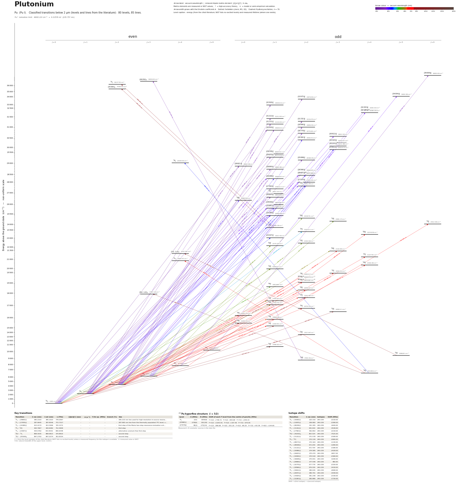

Plutonium energy level diagram
Energy levels and transitions of neutral plutonium (Pu I): 80 levels and 85 classified lines below 2 µm taken from the cited literature, each line with its vacuum wavelength and frequency. The NIST Atomic Spectra Database lists only the ground level and the ionisation limit of plutonium, so the level energies on this page are those of the literature sources named below.
Hover a line or a level to isolate it, click to keep it selected. Scroll to zoom, drag to move.

Download: diagram (PDF) diagram (SVG) transitions (CSV) levels (CSV) source code

Key transitions of plutonium
| Transition | λ vac (nm) | λ air (nm) | ν (THz) | |⟨J‖er‖J′⟩| (ea₀) | A (s⁻¹) | Γ/2π up. (MHz) | branch (%) | Use |
|---|---|---|---|---|---|---|---|---|
| 7F0 – (25960)°1 | 385.2103 | 385.1010 | 778.2567 | – | – | – | – | 385.210 nm line used for high-resolution in-source resona… |
| 7F1 – (27979)°2 | 387.9645 | 387.8546 | 772.7317 | – | – | – | – | 387.965 nm line from the thermally populated 7F1 level, u… |
| 7F0 – (24189)°1 | 413.4172 | 413.3006 | 725.1572 | – | – | – | – | first step of the Mainz two-step resonance-ionization sch… |
| 7F0 – 7D°1 | 420.7667 | 420.6482 | 712.4909 | – | – | – | – | first step |
| 7F0 – (23037)°1 | 434.0762 | 433.9542 | 690.6448 | – | – | – | – | alternative uranium-free first step |
| 7D°1 – 7F2 | 808.3035 | 808.0813 | 370.8910 | – | – | – | – | second step |
| 7D°1 – (35569)2 | 847.2702 | 847.0374 | 353.8334 | – | – | – | – | second step |
λ, ν from the level energies of the cited literature (NIST lists no excited levels) unless a measured frequency for this isotope is available. A: measured value or NIST. Γ/2π: natural linewidth of the upper level, 1/(2πτ).
241Pu hyperfine structure (I = 5/2)
| Level | A (MHz) | B (MHz) | Shift of each F level from the centre of gravity (MHz) |
|---|---|---|---|
| 7F1 | -2(5) | 1059(8) | F=3/2: +748.72 F=5/2: -844.68 F=7/2: +259.15 |
| (25960)°1 | -278(6) | 101(18) | F=3/2: +1043.91 F=5/2: +197.46 F=7/2: -670.05 |
| (27979)°2 | 38(3) | -175(14) | F=1/2: -386.68 F=3/2: -251.20 F=5/2: -69.25 F=7/2: +93.39 F=9/2: +144.65 |
Measured A, B constants; sources in the data file.
Isotope shifts
| Transition | λ vac (nm) | Isotopes | Shift (MHz) |
|---|---|---|---|
| 7F0 – (30930)°1 | 323.316 | 240-239 | -2218.00 |
| 7F2 – (33975)°2 | 336.982 | 240-239 | -2398.00 |
| 7F0 – (29299)°1 | 341.305 | 240-239 | -1649.00 |
| 7F1 – (31152)°2 | 345.444 | 240-239 | -3538.00 |
| 7F0 – (27563)°1 | 362.802 | 240-239 | -2218.00 |
| 7H°2 – (36292)3 | 363.324 | 240-239 | -7525.00 |
| 7F2 – (31212)°1 | 371.578 | 240-239 | -2308.00 |
| 7F0 – 9F°1 | 372.130 | 240-239 | -2069.00 |
| 7F1 – (29073)°1 | 372.164 | 240-239 | -1139.00 |
| 7F1 – (29068)°2 | 372.240 | 240-239 | -1289.00 |
| 7F2 – (31131)°1 | 372.704 | 240-239 | -2188.00 |
| 7F2 – (30996)°2 | 374.585 | 240-239 | -2428.00 |
| 7F0 – (26633)°1 | 375.470 | 240-239 | -3657.00 |
| 7F2 – (30930)°1 | 375.518 | 240-239 | -2368.00 |
| 7F6 – (36838)°6 | 375.941 | 240-239 | -3208.00 |
| 7F1 – (28690)°1 | 377.546 | 240-239 | 480.00 |
| 7F2 – (30770)°2 | 377.779 | 240-239 | -2159.00 |
| 7F1 – (28566)°2 | 379.330 | 240-239 | -3418.00 |
| 7F2 – (30612)°3 | 380.045 | 240-239 | -2698.00 |
| 7F1 – (28471)°2 | 380.701 | 240-239 | -3448.00 |
| 7F4 – (34004)°5 | 381.248 | 240-239 | -2338.00 |
| 7F3 – (32263)°4 | 382.866 | 240-239 | -1739.00 |
Shift = ν(first isotope) − ν(second isotope).
Listed Pu transitions below 2 µm
| Lower level | Upper level | λ vacuum (nm) | λ air (nm) | ν (THz) | Type | |⟨J‖er‖J′⟩| (ea₀) | A (s⁻¹) | Branching (%) | Source of matrix element / A |
|---|---|---|---|---|---|---|---|---|---|
| 7F0 | (30930)°1 | 323.3157 | 323.2224 | 927.2437 | E1 | – | – | – | – |
| 7F1 | (32920)°1 | 325.5632 | 325.4693 | 920.8426 | E1 | – | – | – | – |
| 7F2 | (33975)°2 | 336.9824 | 336.8856 | 889.6383 | E1 | – | – | – | – |
| 7F0 | (29299)°1 | 341.3049 | 341.2071 | 878.3713 | E1 | – | – | – | – |
| 7F1 | (31152)°2 | 345.4439 | 345.3449 | 867.8471 | E1 | – | – | – | – |
| 7F0 | (27563)°1 | 362.8024 | 362.6989 | 826.3245 | E1 | – | – | – | – |
| 7H°2 | (36292)3 | 363.3235 | 363.2200 | 825.1392 | E1 | – | – | – | – |
| 7F2 | (31212)°1 | 371.5780 | 371.4723 | 806.8090 | E1 | – | – | – | – |
| 7F0 | 9F°1 | 372.1301 | 372.0243 | 805.6120 | E1 (intercombination) | – | – | – | – |
| 7F1 | (29073)°1 | 372.1644 | 372.0585 | 805.5378 | E1 | – | – | – | – |
| 7F1 | (29068)°2 | 372.2395 | 372.1337 | 805.3751 | E1 | – | – | – | – |
| 7F2 | (31131)°1 | 372.7039 | 372.5979 | 804.3717 | E1 | – | – | – | – |
| 7F2 | (30996)°2 | 374.5854 | 374.4790 | 800.3314 | E1 | – | – | – | – |
| 7F0 | (26633)°1 | 375.4700 | 375.3633 | 798.4459 | E1 | – | – | – | – |
| 7F2 | (30930)°1 | 375.5183 | 375.4116 | 798.3432 | E1 | – | – | – | – |
| 7F1 | (28821)°0 | 375.7006 | 375.5938 | 797.9559 | E1 | – | – | – | – |
| 7F6 | (36838)°6 | 375.9406 | 375.8338 | 797.4464 | E1 | – | – | – | – |
| 7F1 | (28690)°1 | 377.5455 | 377.4383 | 794.0565 | E1 | – | – | – | – |
| 7F2 | (30770)°2 | 377.7785 | 377.6712 | 793.5669 | E1 | – | – | – | – |
| 7F1 | (28566)°2 | 379.3298 | 379.2222 | 790.3213 | E1 | – | – | – | – |
| 7F2 | (30612)°3 | 380.0451 | 379.9373 | 788.8338 | E1 | – | – | – | – |
| 7F1 | (28471)°2 | 380.7007 | 380.5927 | 787.4755 | E1 | – | – | – | – |
| 7F4 | (34004)°5 | 381.2480 | 381.1398 | 786.3450 | E1 | – | – | – | – |
| 7F3 | (32263)°4 | 382.8661 | 382.7574 | 783.0218 | E1 | – | – | – | – |
| 7F1 | (28268)°1 | 383.6613 | 383.5524 | 781.3988 | E1 | – | – | – | – |
| 7F3 | (32186)°4 | 384.0009 | 383.8920 | 780.7077 | E1 | – | – | – | – |
| 7F2 | (30320)°3 | 384.3188 | 384.2098 | 780.0619 | E1 | – | – | – | – |
| 7F0 | (25960)°1 | 385.2103 | 385.1010 | 778.2567 | E1 | – | – | – | – |
| 7F1 | (27979)°2 | 387.9645 | 387.8546 | 772.7317 | E1 | – | – | – | – |
| 7F0 | (25661)°1 | 389.6996 | 389.5892 | 769.2912 | E1 | – | – | – | – |
| 7F1 | 9F°2 | 392.9646 | 392.8534 | 762.8994 | E1 (intercombination) | – | – | – | – |
| 7F1 | 5D°0 | 411.6074 | 411.4913 | 728.3456 | E1 (intercombination) | – | – | – | – |
| 7F3 | (30362)°2 | 412.9280 | 412.8115 | 726.0163 | E1 | – | – | – | – |
| 7F0 | (24189)°1 | 413.4172 | 413.3006 | 725.1572 | E1 | – | – | – | – |
| 7F2 | (28471)°2 | 413.7138 | 413.5971 | 724.6374 | E1 | – | – | – | – |
| 7F3 | (30131)°3 | 416.8947 | 416.7772 | 719.1084 | E1 | – | – | – | – |
| 7F2 | (28268)°1 | 417.2124 | 417.0948 | 718.5607 | E1 | – | – | – | – |
| 7F0 | 7D°1 | 420.7667 | 420.6482 | 712.4909 | E1 | – | – | – | – |
| 7F1 | (25960)°1 | 420.9420 | 420.8234 | 712.1943 | E1 | – | – | – | – |
| 7F2 | (27979)°2 | 422.3062 | 422.1873 | 709.8936 | E1 | – | – | – | – |
| 7F3 | (29811)°3 | 422.5389 | 422.4199 | 709.5026 | E1 | – | – | – | – |
| 7F1 | (25661)°1 | 426.3086 | 426.1886 | 703.2287 | E1 | – | – | – | – |
| 7F2 | 9F°2 | 428.2374 | 428.1170 | 700.0613 | E1 (intercombination) | – | – | – | – |
| 7F0 | (23037)°1 | 434.0762 | 433.9542 | 690.6448 | E1 | – | – | – | – |
| 7K°4 | 7K4 | 440.6137 | 440.4900 | 680.3975 | E1 | – | – | – | – |
| 7F1 | 7F°2 | 473.6731 | 473.5407 | 632.9100 | E1 | – | – | – | – |
| 7F0 | 9F°1 | 538.2517 | 538.1021 | 556.9745 | E1 (intercombination) | – | – | – | – |
| 7F3 | 5D°2 | 555.1168 | 554.9627 | 540.0529 | E1 (intercombination) | – | – | – | – |
| 7F3 | 7G°3 | 557.2068 | 557.0521 | 538.0273 | E1 | – | – | – | – |
| 7F2 | 7G°2 | 559.2100 | 559.0547 | 536.1000 | E1 | – | – | – | – |
| 7F2 | 5D°1 | 559.3885 | 559.2332 | 535.9289 | E1 (intercombination) | – | – | – | – |
| 7F1 | 7G°1 | 563.2083 | 563.0520 | 532.2941 | E1 | – | – | – | – |
| 7F0 | 7D°1 | 571.3967 | 571.2382 | 524.6661 | E1 | – | – | – | – |
| 7F2 | 9D°3 | 584.0670 | 583.9051 | 513.2844 | E1 (intercombination) | – | – | – | – |
| 7F0 | 9G°1 | 586.6556 | 586.4930 | 511.0195 | E1 (intercombination) | – | – | – | – |
| 7F1 | 7D°2 | 619.4516 | 619.2803 | 483.9643 | E1 | – | – | – | – |
| 7F0 | 7G°1 | 630.6408 | 630.4664 | 475.3775 | E1 | – | – | – | – |
| 7F4 | 9D°4 | 645.1528 | 644.9745 | 464.6845 | E1 (intercombination) | – | – | – | – |
| 7F1 | 7F°2 | 648.8503 | 648.6710 | 462.0364 | E1 | – | – | – | – |
| 7F0 | 7G°1 | 649.0657 | 648.8864 | 461.8831 | E1 | – | – | – | – |
| 7F1 | 7D°1 | 653.7071 | 653.5265 | 458.6037 | E1 | – | – | – | – |
| 7F3 | 9D°3 | 654.6016 | 654.4208 | 457.9770 | E1 (intercombination) | – | – | – | – |
| 7F2 | 7F°3 | 661.0760 | 660.8935 | 453.4916 | E1 | – | – | – | – |
| 7F3 | 7F°4 | 662.9859 | 662.8028 | 452.1853 | E1 | – | – | – | – |
| 7F2 | 7P°2 | 667.4561 | 667.2719 | 449.1568 | E1 | – | – | – | – |
| 7F2 | 5G°2 | 670.9718 | 670.7866 | 446.8034 | E1 (intercombination) | – | – | – | – |
| 7F2 | 9G°2 | 676.8358 | 676.6490 | 442.9323 | E1 (intercombination) | – | – | – | – |
| 7F1 | 7F°2 | 688.2054 | 688.0155 | 435.6148 | E1 | – | – | – | – |
| 7K°4 | 9L4 | 688.9609 | 688.7709 | 435.1371 | E1 (intercombination) | – | – | – | – |
| 7F3 | 5G°4 | 706.1166 | 705.9219 | 424.5651 | E1 (intercombination) | – | – | – | – |
| 7F2 | 7D°2 | 711.8827 | 711.6865 | 421.1262 | E1 | – | – | – | – |
| 7F1 | 7F°0 | 714.3619 | 714.1651 | 419.6646 | E1 | – | – | – | – |
| 7F6 | 7F°6 | 726.0036 | 725.8036 | 412.9352 | E1 | – | – | – | – |
| 7F1 | 7G°1 | 732.4246 | 732.2229 | 409.3151 | E1 | – | – | – | – |
| 7F2 | 7F°2 | 750.9863 | 750.7795 | 399.1983 | E1 | – | – | – | – |
| 7F1 | 9G°0 | 754.9525 | 754.7447 | 397.1011 | E1 (intercombination) | – | – | – | – |
| 7F1 | 7G°1 | 757.3948 | 757.1863 | 395.8206 | E1 | – | – | – | – |
| 7F2 | 7D°1 | 757.5001 | 757.2916 | 395.7656 | E1 | – | – | – | – |
| 7D°1 | 7F2 | 808.3035 | 808.0813 | 370.8910 | E1 | – | – | – | – |
| 7F2 | 7G°3 | 813.3089 | 813.0853 | 368.6084 | E1 | – | – | – | – |
| 7K°5 | (7/2,1/2)4 | 831.1886 | 830.9602 | 360.6792 | E1 | – | – | – | – |
| 7D°1 | (35569)2 | 847.2702 | 847.0374 | 353.8334 | E1 | – | – | – | – |
| 7K°4 | (5/2,1/2)3 | 863.3153 | 863.0783 | 347.2572 | E1 | – | – | – | – |
| 7F1 | 7G°2 | 883.8575 | 883.6149 | 339.1864 | E1 | – | – | – | – |
| 7F0 | 7G°1 | 953.5686 | 953.3071 | 314.3900 | E1 | – | – | – | – |
Reduced dipole matrix elements follow the convention A = ω³|d|²/(3πε₀ħc³(2J′+1)), with J′ the upper level. Tags show where a number comes from: measured, NIST compilation, high-accuracy theory, or a model calculation.
Pu energy levels
| Level | Energy (cm⁻¹) | J | Parity | Lifetime | gJ | Hyperfine A (MHz) | Hyperfine B (MHz) | Lifetime source | Hyperfine source |
|---|---|---|---|---|---|---|---|---|---|
| 7F0 | 0.000 | 0 | even | stable | – | – | – | – | – |
| 7F1 | 2203.606 | 1 | even | – | 1.495 | -2.2 | 1058.6 | – | Voss, Sonnenschein, Campbell, Cheal, Kron, Moore, Pohjalainen, Raeder, Trautmann, Wendt, … |
| 7F2 | 4299.659 | 2 | even | – | 1.482 | – | – | – | – |
| 7F3 | 6144.515 | 3 | even | – | 1.473 | – | – | – | – |
| 7K°4 | 6313.866 | 4 | odd | – | 0.487 | – | – | – | – |
| 7F4 | 7774.653 | 4 | even | – | 1.463 | – | – | – | – |
| 7H°2 | 8768.139 | 2 | odd | – | 0.362 | – | – | – | – |
| 7K°5 | 9386.801 | 5 | odd | – | 0.801 | – | – | – | – |
| 7F6 | 10238.473 | 6 | even | – | 1.431 | – | – | – | – |
| 7G°1 | 10486.922 | 1 | odd | – | 0.355 | – | – | – | – |
| 7G°2 | 13517.647 | 2 | odd | – | 0.892 | – | – | – | – |
| 7G°1 | 15406.760 | 1 | odd | – | 0.89 | – | – | – | – |
| 9G°0 | 15449.472 | 0 | odd | – | – | – | – | – | – |
| 7G°1 | 15856.888 | 1 | odd | – | 1.103 | – | – | – | – |
| 7F°0 | 16202.112 | 0 | odd | – | – | – | – | – | – |
| 7G°3 | 16595.111 | 3 | odd | – | 0.999 | – | – | – | – |
| 7F°2 | 16734.152 | 2 | odd | – | 0.928 | – | – | – | – |
| 9G°1 | 17045.776 | 1 | odd | – | 1.474 | – | – | – | – |
| 7D°1 | 17500.977 | 1 | odd | – | 2.258 | – | – | – | – |
| 7F°2 | 17615.482 | 2 | odd | – | 1.45 | – | – | – | – |
| (5/2,1/2)3 | 17897.119 | 3 | even | – | 0.45 | – | – | – | – |
| 7D°2 | 18346.917 | 2 | odd | – | 1.518 | – | – | – | – |
| 9F°1 | 18578.669 | 1 | odd | – | 1.932 | – | – | – | – |
| 9G°2 | 19074.292 | 2 | odd | – | 1.532 | – | – | – | – |
| 5G°2 | 19203.415 | 2 | odd | – | 1.021 | – | – | – | – |
| 7P°2 | 19281.917 | 2 | odd | – | 1.822 | – | – | – | – |
| 7F°3 | 19426.512 | 3 | odd | – | 1.435 | – | – | – | – |
| 7G°1 | 19959.027 | 1 | odd | – | 0.76 | – | – | – | – |
| 5G°4 | 20306.482 | 4 | odd | – | 1.123 | – | – | – | – |
| 9L4 | 20828.477 | 4 | even | – | 0.352 | – | – | – | – |
| 7F°4 | 21227.793 | 4 | odd | – | 1.346 | – | – | – | – |
| (7/2,1/2)4 | 21417.765 | 4 | even | – | 0.802 | – | – | – | – |
| 9D°3 | 21420.983 | 3 | odd | – | 1.663 | – | – | – | – |
| 5D°1 | 22176.323 | 1 | odd | – | – | – | – | – | – |
| 7G°2 | 22182.030 | 2 | odd | – | – | – | – | – | – |
| (23037)°1 | 23037.432 | 1 | odd | – | 0.87 | – | – | – | – |
| 9D°4 | 23274.858 | 4 | odd | – | 1.604 | – | – | – | – |
| 7F°2 | 23315.211 | 2 | odd | – | 1.335 | – | – | – | – |
| 7D°1 | 23766.139 | 1 | odd | – | 2.162 | – | – | – | – |
| 7F°6 | 24012.509 | 6 | odd | – | 1.248 | – | – | – | – |
| 7G°3 | 24091.173 | 3 | odd | – | 1.245 | – | – | – | – |
| 5D°2 | 24158.741 | 2 | odd | – | 1.24 | – | – | – | – |
| (24189)°1 | 24188.639 | 1 | odd | – | 0.667 | – | – | – | – |
| (25661)°1 | 25660.792 | 1 | odd | – | – | – | – | – | – |
| (25960)°1 | 25959.849 | 1 | odd | – | 1.037 | -278.1 | 100.8 | – | Voss, Sonnenschein, Campbell, Cheal, Kron, Moore, Pohjalainen, Raeder, Trautmann, Wendt, … |
| 5D°0 | 26498.599 | 0 | odd | – | – | – | – | – | – |
| (26633)°1 | 26633.288 | 1 | odd | – | 1.124 | – | – | – | – |
| 9F°1 | 26872.323 | 1 | odd | – | 2.69 | – | – | – | – |
| (27563)°1 | 27563.217 | 1 | odd | – | 0.745 | – | – | – | – |
| 9F°2 | 27651.190 | 2 | odd | – | 1.57 | – | – | – | – |
| (27979)°2 | 27979.161 | 2 | odd | – | 1.186 | 37.7 | -175.4 | – | Voss, Sonnenschein, Campbell, Cheal, Kron, Moore, Pohjalainen, Raeder, Trautmann, Wendt, … |
| (28268)°1 | 28268.265 | 1 | odd | – | 1.252 | – | – | – | – |
| (28471)°2 | 28470.960 | 2 | odd | – | 1.104 | – | – | – | – |
| (28566)°2 | 28565.887 | 2 | odd | – | 0.911 | – | – | – | – |
| (28690)°1 | 28690.480 | 1 | odd | – | 1.195 | – | – | – | – |
| (28821)°0 | 28820.548 | 0 | odd | – | – | – | – | – | – |
| 7K4 | 29009.483 | 4 | even | – | 0.695 | – | – | – | – |
| (29068)°2 | 29068.029 | 2 | odd | – | 1.284 | – | – | – | – |
| (29073)°1 | 29073.454 | 1 | odd | – | 1.356 | – | – | – | – |
| (29299)°1 | 29299.312 | 1 | odd | – | 1.307 | – | – | – | – |
| (29811)°3 | 29810.974 | 3 | odd | – | 1.184 | – | – | – | – |
| (30131)°3 | 30131.388 | 3 | odd | – | 1.232 | – | – | – | – |
| (30320)°3 | 30319.724 | 3 | odd | – | 1.01 | – | – | – | – |
| (30362)°2 | 30361.813 | 2 | odd | – | 1.044 | – | – | – | – |
| (30612)°3 | 30612.323 | 3 | odd | – | 1.408 | – | – | – | – |
| (30770)°2 | 30770.200 | 2 | odd | – | 1.216 | – | – | – | – |
| (30930)°1 | 30929.520 | 1 | odd | – | 2.26 | – | – | – | – |
| (30996)°2 | 30995.840 | 2 | odd | – | 1.47 | – | – | – | – |
| (31131)°1 | 31130.610 | 1 | odd | – | 2.342 | – | – | – | – |
| (31152)°2 | 31151.870 | 2 | odd | – | 1.632 | – | – | – | – |
| (31212)°1 | 31211.910 | 1 | odd | – | 1.235 | – | – | – | – |
| (32186)°4 | 32186.120 | 4 | odd | – | 1.212 | – | – | – | – |
| (32263)°4 | 32263.310 | 4 | odd | – | 1.158 | – | – | – | – |
| (32920)°1 | 32919.610 | 1 | odd | – | 1.49 | – | – | – | – |
| (33975)°2 | 33974.800 | 2 | odd | – | 1.11 | – | – | – | – |
| (34004)°5 | 34004.300 | 5 | odd | – | 1.239 | – | – | – | – |
| (35569)2 | 35568.750 | 2 | even | – | 1.04 | – | – | – | – |
| 7F2 | 36137.730 | 2 | even | – | 1.525 | – | – | – | – |
| (36292)3 | 36291.820 | 3 | even | – | 0.98 | – | – | – | – |
| (36838)°6 | 36838.420 | 6 | odd | – | 1.318 | – | – | – | – |
Pu⁺ ionisation limit 48601.00 cm⁻¹ = 6.02576 eV (205.757 nm)
Sources
- Blaise & Wyart, Selected Constants: Energy Levels and Atomic Spectra of Actinides (Tables…
- Blaise & Wyart, Selected Constants: Energy Levels and Atomic Spectra of Actinides (Tables…
- Blaise & Wyart, Selected Constants: Energy Levels and Atomic Spectra of Actinides (Tables…
- Voss, Sonnenschein, Campbell, Cheal, Kron, Moore, Pohjalainen, Raeder, Trautmann, Wendt, …
Plutonium has no stable isotope; level energies are those of 240Pu from the Blaise-Wyart compilation (archived web tables of Laboratoire Aime Cotton; energies printed without uncertainty, typically 0.001 cm-1 digits from Fourier-transform spectra). levels_not_in_nist holds the levels of the entered lines plus every tabulated level below 16000 cm-1. Lines: the "selected wavelengths" table of the same compilation (strong classified Pu I lines, air wavelengths, levels printed truncated to 1 cm-1 and matched here to the level tables by energy, J and wavenumber; the residual is in each note); the highest-intensity lines and those from the lowest levels were kept (table has 184 Pu I lines). Many upper levels lie above 30000 cm-1 because the strong ultraviolet lines end there. relative_intensity is the table intensity, not calibrated. isotope_shift_MHz with key 240-239 is derived from the level-shift columns Delta-T(240-239) (10^-3 cm^-1; the zero of that scale is arbitrary, only differences matter) and means nu(240Pu) - nu(239Pu); sign checked against Voss 2017. Voss shifts are stored as nu(A) - nu(240). g_J values in levels_not_in_nist are the table values (Zeeman-effect measurements quoted in the compilation). Laser excitation steps without an emission-line entry carry a note.
Atoms with measured data
- Lithium-632 levels, 85 lines
- Lithium-732 levels, 85 lines
- Beryllium-917 levels, 26 lines
- Sodium-2336 levels, 106 lines
- Magnesium-2418 levels, 61 lines
- Magnesium-2518 levels, 61 lines
- Potassium-3934 levels, 84 lines
- Potassium-4034 levels, 84 lines
- Potassium-4134 levels, 84 lines
- Calcium-4035 levels, 61 lines
- Calcium-4335 levels, 61 lines
- Chromium-5256 levels, 87 lines
- Chromium-5356 levels, 87 lines
- Rubidium-8536 levels, 94 lines
- Rubidium-8736 levels, 94 lines
- Strontium-8440 levels, 70 lines
- Strontium-8640 levels, 70 lines
- Strontium-8740 levels, 70 lines
- Strontium-8840 levels, 70 lines
- Cadmium-11115 levels, 21 lines
- Cadmium-11315 levels, 21 lines
- Cadmium-11415 levels, 21 lines
- Caesium-13331 levels, 79 lines
- Barium-13744 levels, 89 lines
- Barium-13844 levels, 89 lines
- Dysprosium-16139 levels, 55 lines
- Dysprosium-16239 levels, 55 lines
- Dysprosium-16339 levels, 55 lines
- Dysprosium-16439 levels, 55 lines
- Erbium-16673 levels, 90 lines
- Erbium-16773 levels, 90 lines
- Erbium-16873 levels, 90 lines
- Thulium-16972 levels, 73 lines
- Ytterbium-17118 levels, 26 lines
- Ytterbium-17318 levels, 26 lines
- Ytterbium-17418 levels, 26 lines
- Mercury-19927 levels, 47 lines
- Mercury-20127 levels, 47 lines
- Mercury-20227 levels, 47 lines